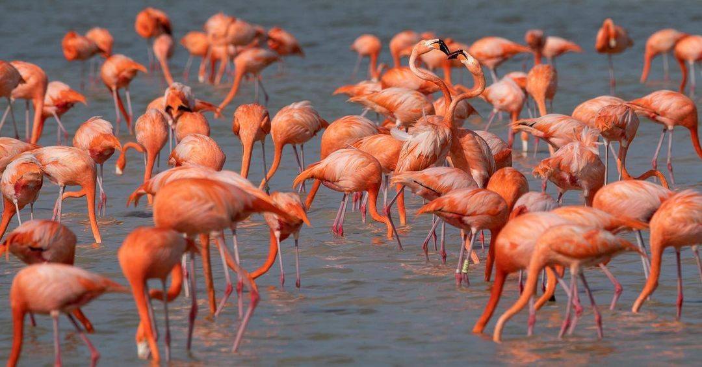
Flamingo
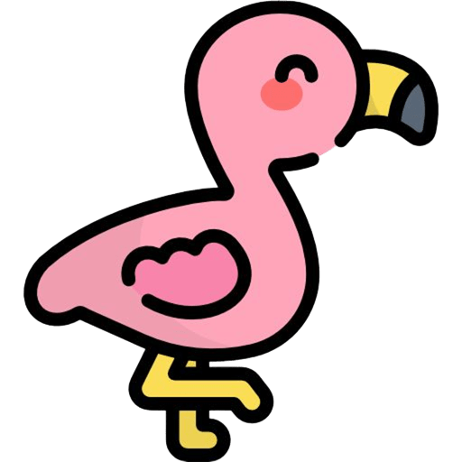
Hábitat: Ambientes acuáticos poco profundos, como lagos, lagunas y humedales con aguas saladas, salobres o alcalinas
Alimentacion: Pequeños crustáceos, algas y organismos acuáticos
Un flamenco es un ave palmípeda con patas y cuello largos, un cuerpo esbelto y plumaje que varía de rosa pálido a rojo.
Su color se debe a los pigmentos de su dieta, que incluye algas y pequeños invertebrados acuáticos. Su pico único, con forma de "V",
está adaptado para filtrar el alimento del agua mediante un mecanismo de succión que retiene las partículas.
Datos curiosos
- Si no consumen carotenoides en su dieta se vuelven blancos
- Descansan en una pata para conservar su calor corporal
- Ambos padres producen leche en el buche para alimentar a las crías

Aguila Real
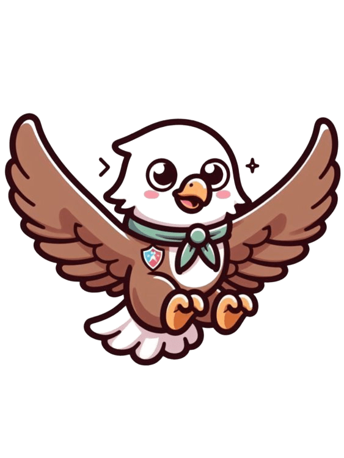
Hábitat: Zonas áridas y montañosas. También en ecosistemas como tundra, pastizales y matorrales boscosos.
Alimentacion:Mamíferos pequeños y medianos como conejos, liebres, ardillas y perritos de la pradera.
El águila real es un ave rapaz grande, de plumaje marrón oscuro con tonos dorados en la cabeza y el cuello,
que puede medir hasta 1.2 metros de largo y tener una envergadura de hasta 2.3 metros. Posee un pico ganchudo, patas emplumadas con garras muy
fuertes y una vista excepcional. Tiene patas fuertes emplumadas hasta los dedos con garras afiladas de hasta 6 centímetros.
Datos curiosos
- Construyen nidos enormes que pueden alcanzar hasta 1.8 metros de ancho y 60 cm de alto. l
- Alcanzan velocidades de hasta 320 km/h al lanzarse en picada
- Son monógamas y forman parejas estables de por vida.
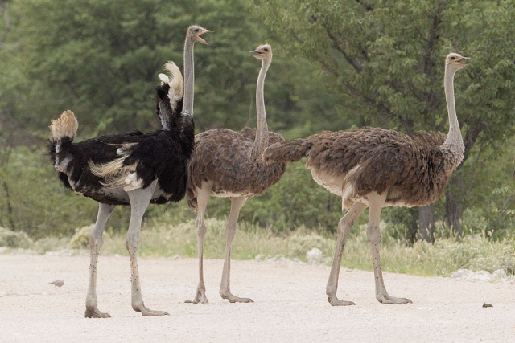
Avestruz
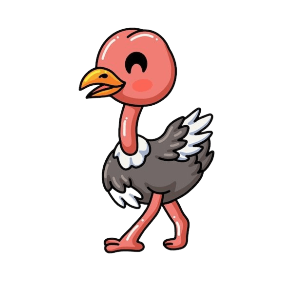
Hábitat: África, principalmente en hábitats áridos y semiáridos como sabanas, desiertos y bosques abiertos.
Alimentacion: Omnívoros: Se alimenta de plantas (hierbas, semillas, otros) y pequeños animales(insectos, lagarticas y roedores)
El avestruz es el ave viva más grande, alcanzando hasta 3 metros de altura y 180 kg de peso, y no puede volar pero es una corredora excepcional.
Se caracteriza por su cuello y patas largas y desprovistas de plumas, que le permiten correr hasta a 69 km/h. Su plumaje es negro con cola blanca en
los machos y marrón grisáceo en las hembras, con ojos grandes para su tamaño y patas con dos dedos en cada una.
Datos curiosos
- Tienen los ojos más grandes de cualquier vertebrado terrestre
- Su cerebro es más pequeño que sus ojos.
- Sus huevos pesan ~1.5 kg (equivalente a 24 huevos de gallina) y su cáscara soporta el peso de un humano.
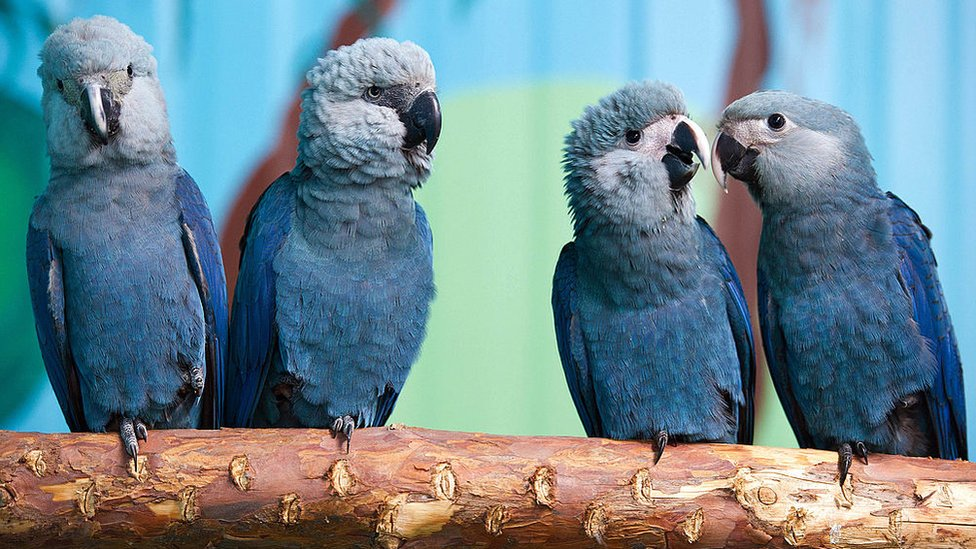
Guacamayo Azul
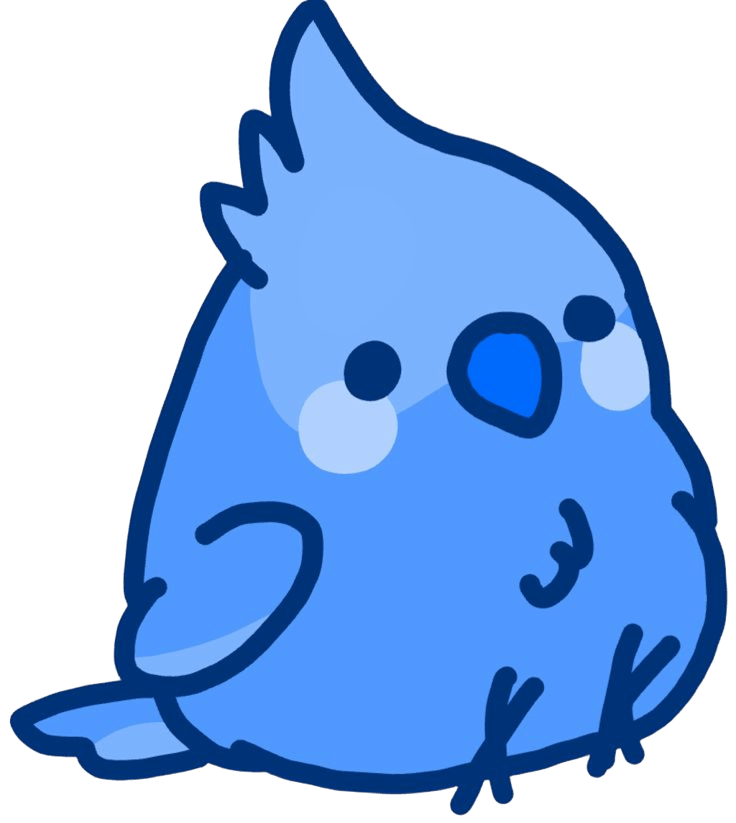
Hábitat:Bosques tropicales y subtropicales, sabanas y zonas selváticas de América del Sur.
Alimentacion: nueces de palma (como la palma de acuri y bocaiuva), frutas y, ocasionalmente, caracoles.
El guacamayo azul (Ara ararauna) es un ave grande de América del Sur con un plumaje mayormente azul brillante en la parte superior del cuerpo,
contrastando con el pecho y el cuello amarillos. Su frente es verdosa, la garganta es negra y tiene una máscara facial blanca con pequeñas líneas
negras alrededor de los ojos. Es una especie social y monógama, con un pico fuerte y adaptable que usa para alimentarse de semillas, frutas y nueces.
Datos curiosos
- Por el tráfico ilegal y la pérdida de hábitat, estuvo al borde de la extinsión
- Vuelan en pareja o pequeños grupos con fuertes gritos.
- El personaje "Blu" de la película Río es un guacamayo azul (aunque en la realidad, esta especie no habita Río de Janeiro).
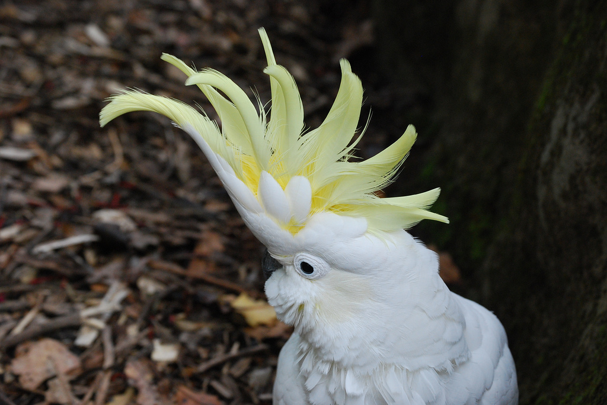
Cacatua sulphurea
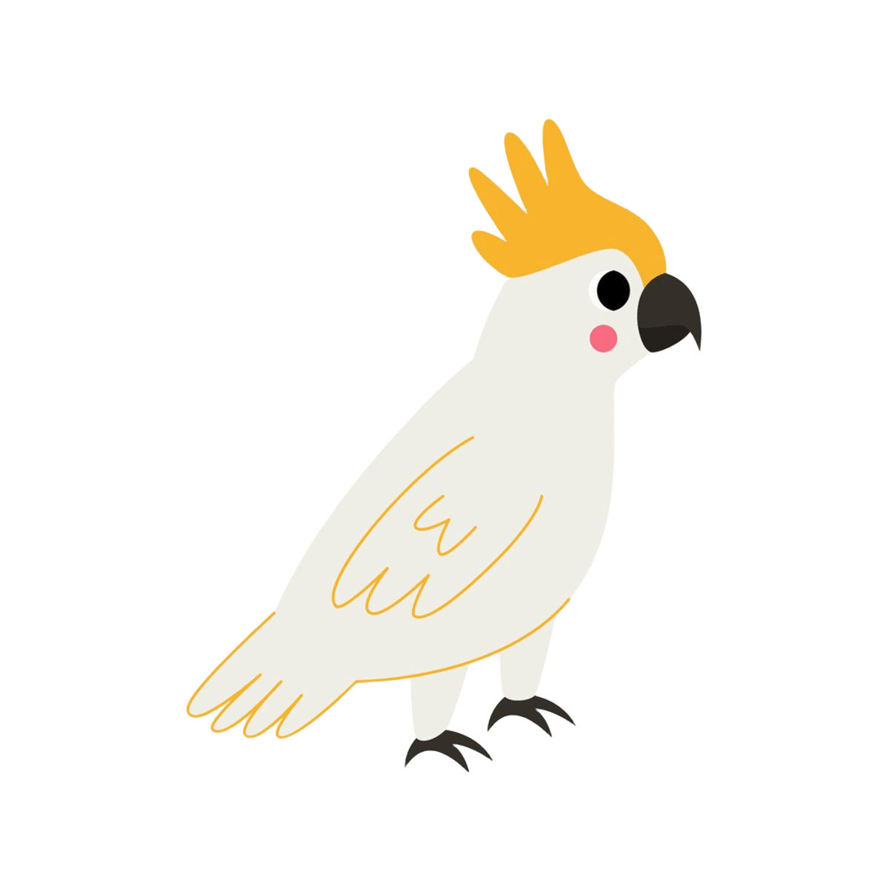
Hábitat: Bosques, bordes de bosque, matorrales y áreas agrícolas de la región de Timor Oriental e Indonesia.
Alimentacion: Semillas, frutas, frutos secos, bayas, flores e insectos. En cultivos puede volverse plaga.
La cacatúa sulfúrea es un ave psitaciforme de tamaño mediano que mide entre 33 y 35 centímetros de longitud total, con un peso que oscila entre 300 y 400
gramos. Presenta un dimorfismo sexual moderado: los machos poseen iris marrón oscuro casi negro, mientras que las hembras tienen iris rojizo-castaño,
siendo esta la forma más fiable de diferenciar los sexos.
S
Datos curiosos
- Levantan o bajan la cresta según su estado emocional (alerta, miedo, excitación).
- Pueden vivir más de 40 años en cautiverio.
- prenden algunas palabras y silbidos, pero no son tan buenas habladoras como los loros grises.

Pingüino
Hábitat: Principalmente hemisferio sur, desde la Antártida hasta islas Galápago.Costas rocosas, hielo y aguas frías.
Alimentacion: Peces, krill, calamares y crustáceos que capturan buceando.
Los pingüinos son aves marinas no voladoras con un cuerpo fusiforme y aerodinámico adaptado para nadar. Poseen un plumaje denso y de color negro en
el dorso y blanco en el vientre, una gruesa capa de grasa y alas rígidas en forma de aletas para nadar. Caminan erguidos de forma poco ágil y utilizan
sus patas palmeadas, ubicadas hacia atrás, para desplazarse en tierra y agua.
Datos curiosos
- Muchas especies son monógamas por temporada, pero el pingüino emperador es famoso por su fidelidad y cuidado paterno extremo
- Tienen una glándula que filtra la sal del agua de mar, excretándola por las fosas nasales.

Perico
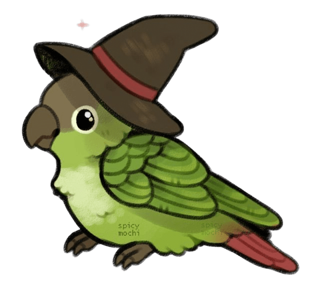
Hábitat: Zonas áridas y semiáridas de Australia, en bandadas nómadas. Hoy criado mundialmente en cautividad.
Alimentacion:Granos, semillas de pasto, frutas y vegetales. En cautiverio, alpiste, mijo, verduras.
Un perico es un ave trepadora, pequeña, de plumaje principalmente verde y pico fuerte, que varía en tamaño pero generalmente mide entre 19 y 33 cm.
Se caracterizan por su cabeza colorida, a menudo con ondas oscuras en el cuello, cola larga y un anillo ocular blanco. Son aves sociales, ruidosas y
se alimentan de semillas, frutos y flores.
Datos curiosos
- Pueden aprender cientos de palabras (el récord lo tiene Puck, con 1.728 palabras).
- Ven la luz ultravioleta.
- Forman parejas muy unidas, se acicalan mutuamente y comparten comida (monogamia).

Garza
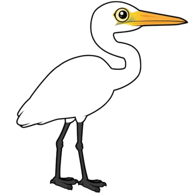
Hábitat: Casi cualquier cuerpo de agua dulce o salobre. Costas en todos los continentes menos la Antártida.
Alimentacion: Carnívoras: peces, anfibios, crustáceos, insectos, pequeños mamíferos y reptiles.
La garza es un ave zancuda de patas, cuello y pico largos, cuerpo esbelto y plumaje variable, que vive en hábitats acuáticos. Se caracteriza por su
cuello en forma de "S" que utiliza para cazar presas.Algunas especies tienen un penacho en la cabeza, y en época de reproducción, desarrollan plumas ornamentales
y exhiben
comportamientos de cortejo.
Datos curiosos
- Tienen vértebras cervicales especializadas que les permiten lanzar el pico como un arpón.
- Siguen a grandes mamíferos (o tractores) para atrapar insectos que espantan.
- En época de cría, las patas de algunas especies se vuelven de colores brillantes (ej., garza real: rojas).
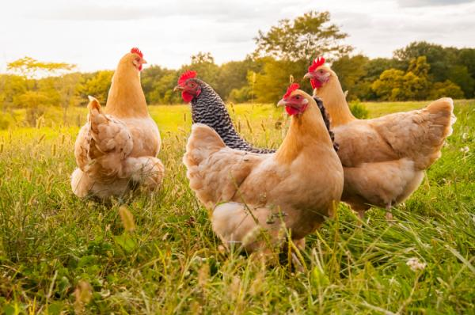
Gallina
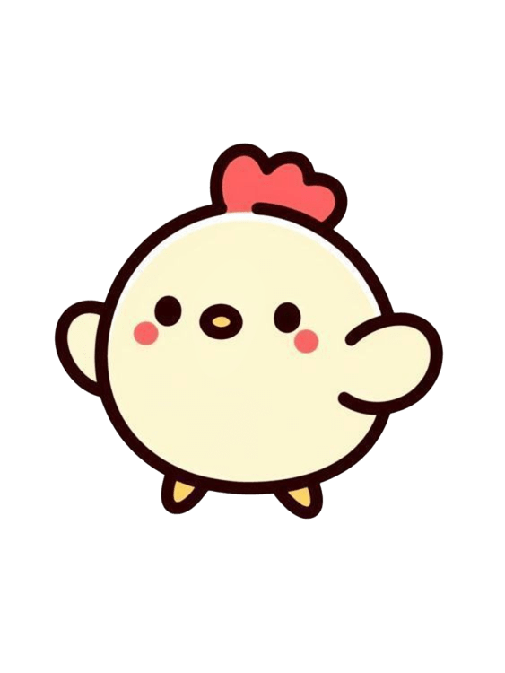
Hábitat: Domesticada, distribuida mundialmente en granjas, corrales y entornos rurales/urbanos.
Alimentacion: Omnívoras: granos, semillas, insectos, gusanos, restos de cocina, pequeños vertebrados.
La gallina es un ave doméstica de la familia Phasianidae, con cresta roja y carnosa, pico corto y grueso, y plumaje abundante. Su tamaño es menor
que el del gallo, su cresta es más pequeña y carece de espolones en las patas, que son de color grisáceo. Es un animal omnívoro, con una esperanza
de vida que oscila entre cinco y diez años.
Datos curiosos
- Tienen más de 30 vocalizaciones distintas para alerta, comida, etc.
- Reconocen hasta 100 rostros de gallinas y humanos.
- Son los parientes vivos más cercanos al Tyrannosaurus rex (comparten colágeno similar).
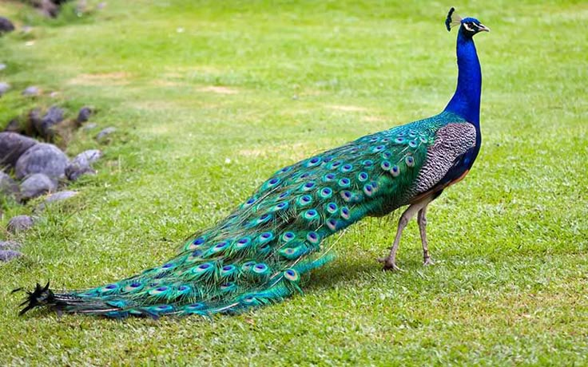
Pavo Real
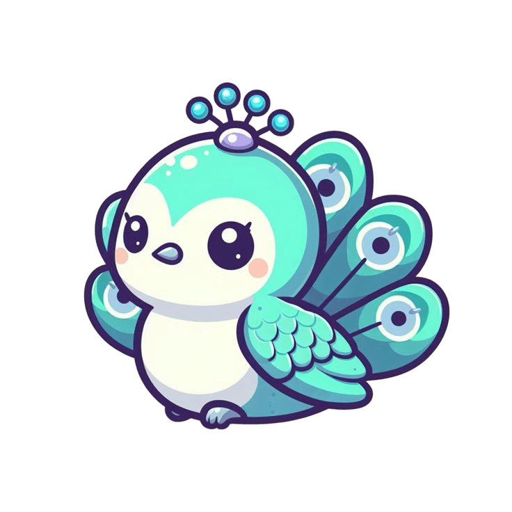
Hábitat: Bosques de la India y Sri Lanka, aunque se han adaptado a zonas de cultivo y a vivir cerca de humanos.
Alimentacion: Omnívoro: semillas, frutas, bayas, insectos, pequeños reptiles y roedores. .
El pavo real es un ave de gran tamaño, conocida por el plumaje iridiscente del macho, que incluye una cola larga y colorida con patrones en forma de
"ojo". El macho tiene el cuello y el pecho de un azul brillante, mientras que la hembra tiene un plumaje más discreto en tonos pardos. Tienen una longitud
que puede superar el metro de altura
Datos curiosos
- En diversas culturas representa belleza, inmortalidad y vanidad.
- Las hembras eligen al macho con más ocelos y simetría en el abanico.
- Aunque pesados, vuelan cortas distancias para posarse en árboles a dormir.